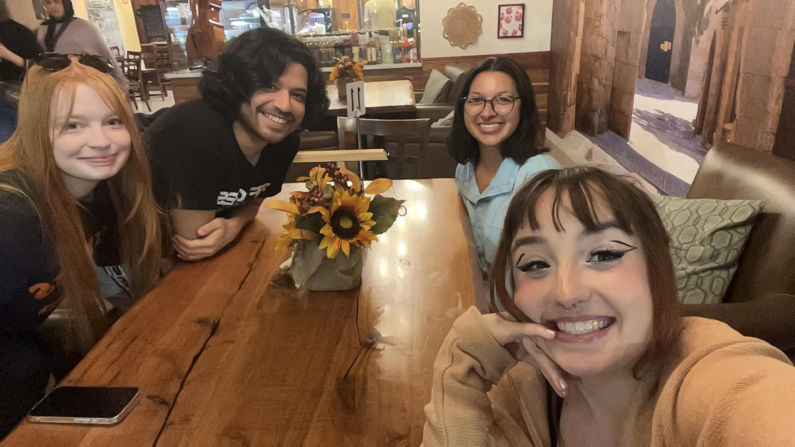
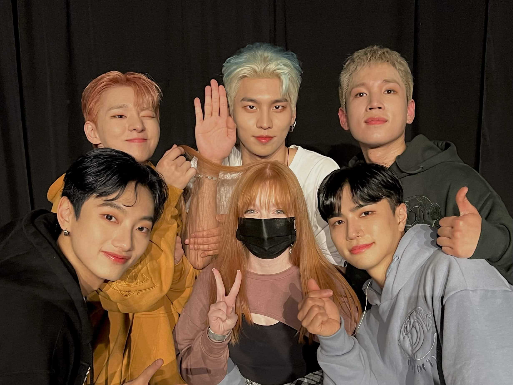
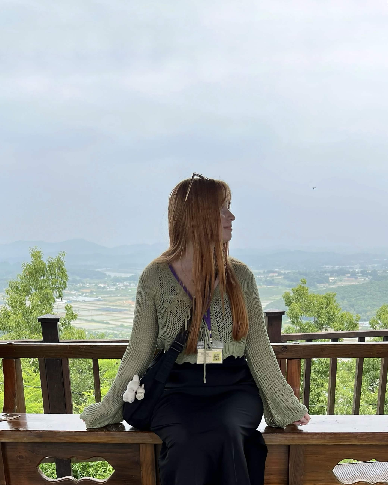

Ashley is a long time video game player. She likes games like Dead by Daylight, Overwatch, and Animal Crossing. Aside from that, her favorite activities are going to Kpop concerts, hanging out with her friends, and traveling. She's been to see many Kpop groups, including Winner, Stray Kids, Staci, and many more. She's traveled to Canada, South and North Korea, Germany, Iceland, and New Zealand. Her favorite place to visit was Jeju Island in Korea. She loved visiting the Snoopy garden and all the good food that was in Jeju.